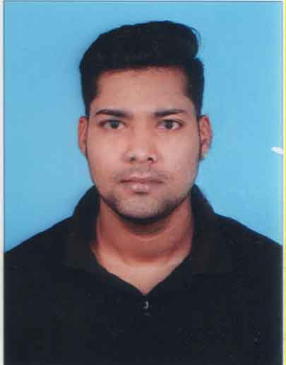

<!DOCTYPE html>
<html lan="en"></html>
<head>
  <meta cherset="UTF-8" />
  <title>My Resume</title>
</head>
<body>
  <h1>CURRICULUM VITAE</h1>
  
  <a href="./contact.html">CONTACT</a>
  <hr />
  <h2>CAREER OBJECTIVE</h2>
  <p>
    <un>
      <li>
        Looking for a challenging career which demands the best of my
        professional ability in terms of technical and analytical skills and
        helps me in gaining knowledge that I will apply for Organization growth.
      </li>
    </un>
  </p>
  <hr />
  <h2>EDUCATIONAL QUALIFICATION</h2>
  <table>
    <tr>
      <th>DEGREE</th>
      <th>SCHOOL/COLLEGE</th>
      <th>BOARD/UNIVERSITY</th>
      <th>% MARKS/CGPA</th>
      <th>YEAR OF PASSING</th>
    </tr>
    <tr>
    <td>B.Tech (ECE)</td>
    <td>INSTITUTE OF TECHNICAL EDUCATION AND RESEARCH, BHUBANESWAR</td>
    <td>SIKSHA 'O' ANUSANDHAN (DEEMED TO BE) UNIVERSITY, BHUBANESWAR</td>
    <td>6.75</td>
    <td>2020</td>
  </tr>
  <tr>
    <td>12th</td>
    <td>D. SINGH COLLEGE, SIKANDRA JAMUI BIHAR</td>
    <td>STATE BOARD</td>
    <td>61.8</td>
    <td>2016</td>
  </tr>
  <tr>
    <td>10th</td>
    <td>VIGNAN VIDYALAYAM SCHOOL VISHAKHAPATNAM AP</td>
    <td>CBSE</td>
    <td>6.6</td>
    <td>2014</td>
  </tr>
  <table/>
  <!-------->
  <hr />
  <h2>TECHNICAL SUMMARY</h2>
  <un>
    <li>2.8 Years of experience in Manual Testing.</li>
    <li>Good understanding of QA Principles, QA Process, Test Plans etc.</li>
    <li>
      Expertise in Testing Client/Server and Web Applications,
      Plugins/extensions.
    </li>
    <li>
      Can quickly understand Customer/Software Requirement Specifications.
    </li>
    <li>Well versed with SDLC, STLC and Defect Life Cycle.</li>
    <li>
      Expertise in identifying and preparing Test Scenarios, Test Cases, Test
      Data & RTM.
    </li>
    <li>Expertise in Test Case Execution.</li>
    <li>
      Expertise in Defect Reporting, Defect Tracking and Defect Management.
    </li>
    <li>
      Expertise in Functional Testing, Re-Testing, Regression Testing, System
      Integration Testing and End-to-End Testing.
    </li>
    <li>
      Good in UI Testing, Usability Testing, Compatibility Testing, Security
      Testing, Load and Performance Testing Concepts.
    </li>
    <li>
      Having a good experience of Compatibility Testing by using Lambda Test.
    </li>
    <li>Having a good experience of Database Testing and SQL Queries.</li>
    <li>Having a good experience of API Testing by using Postman.</li>
    <li>
      Having a experience of Security Testing Concepts like XSS, SQL Injection
      and HTML Injection.
    </li>
    <li>Good in troubleshooting exceptions during Test Execution.</li>
    <li>Well versed with agile methodology.</li>
    <li>Have experience on Bug Tracking Tool JIRA.</li>
    <li>Have experience on Git.</li>
  </un>
  <hr />
  <h2>EXPERIENCE:- TATA CONSULTANCY SERVICES</h2>
  <p>(Feb 2022-Current)</p>
  <p>Designation:- Assistant system engineer</p>
  <or>
    <li>Woo Commerce- Woo-Commerce</li>
    <p>
      Woo-commerce is an application which helps in buying the products. There
      is only one seller in this e-commerce platform and you can buy everything
      from that seller that is admin. Woo-Commerce empowers small and medium
      businesses to build exactly the store they want and sell online.
    </p>
    <li>School Management</li>
    <p>
      It is a management system that helps in automating all the process that
      happened in a school.There are two panel in that Admin Panel and front end
      (Teacher, Accountant, Student). Admin manage all the other users and allow
      permission of feature that the other user can access. Basically it has
      full control of all the features. Teacher manage the students and its
      classes and accountant manage the fees and expenses and student can manage
      the task, assigment, mark his/her attendance, check the exams date and
      give online assigment and submit his task.
    </p>
    <li>Loan Management</li>
    <p>
      It is a Loan managing and servicing software. This website provides all
      the details related to mortgage companies, commercial lending, credit
      unions, municipalities, private and institutional lenders, auto loan
      servicing, student loans, real estate loans, and much more.Through this
      app, we allow you to evaluate your borrows and we also have
      Decision-making support. The main purpose of creating this software is
      that, it will have the details of your entire lifeCycle of borrower
      management: from loan origination to debt collection.
    </p>
  </or>
  <h2>STRENGTHS</h2>
  <un>
    <li>Ability to work both independently and within team.</li>
    <li>Able to work under pressure.</li>
    <li>Punctual and honest about duties.</li>
    <li>Have time management and good communication skills.</li>
  </un>
  <h2>INTEREST AND HOBBIES</h2>
  <uo>
    <li>Swimming</li>
    <li>Reading books</li>
    <li>Basketball</li>
    <li>Travelling</li>
  </uo>
  <h2>PERSONAL PROFILE</h2>
  <uo>
    <li>DATE OF BIRTH :15/03/1999</li>
    <li>GENDER : Male</li>
    <li>NATIONALITY : Indian</li>
    <li>LANGUAGES KNOWN : Hindi, English</li>
  </uo>
  <h2>DECLARATION</h2>
  <uo>
    <li>
      I hereby declare that above furnished particulars are true to the best of
      my knowledge and belief.
    </li>
  </uo>
</body>
